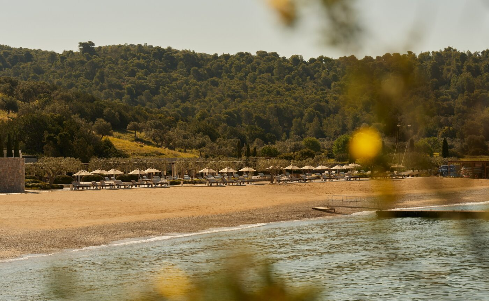

Nura serves dinner on Friday, Saturday and Sunday, and then not again until next summer. Amanzoe’s season does not end all at once. It closes in instalments, and the calendar is already published.
The Beach Club sits ten minutes below the resort, reached by complimentary transfer or a downhill bike ride. Four swimming pools run the length of the sand, two of them for children. Nura is the restaurant at the middle of it, a wood-fired pizza oven at its heart, the Argolic Gulf a few metres past the loungers. Tables are open to visitors as well as house guests.
Dinner stops on 27 September. Lunch carries on from noon until five o’clock through to 31 October, which is the day the Beach Club itself shuts for the year. Aman notes that access depends on seasonal weather; in the Argolid in October that is a live condition.
The grill
Charcoal does most of the work. Seafood arrives off local boats, meat comes from nearby producers, and both go over the fire. Around them sit Greek mezze and seasonal salads, with Spanish small plates threaded through and Italian influence in the pizza oven.
Nura is the Mediterranean end of a long list. Akari, Aman’s signature Japanese restaurant, holds the hilltop with close to 360 degrees of Aegean around it and serves washoku at dinner. The Restaurant does a Greek degustation with wine pairings and a catch of the day baked in salt dough. Bostani, the taverna, cooks what grows on the resort’s own farm, down to the Peloponnesian melons.

The Beach Club at Amanzoe, open until 31 October · Courtesy of Aman
The art comes down
Life Cycles has been installed along the colonnades, gardens and terraces since 22 May. Amanzoe made it with Zoumboulakis Galleries, and it brings sculpture and drawing by Marina Karella, Alexandra Athanassiades, Nikomachi Karakostanoglou and Despina Flessa together for the first time. The resort’s own calendar lists it until 30 September.
Four Greek women, several generations of practice, placed where guests walk to breakfast. The works sit under the colonnade and in the gardens rather than behind a gallery door, which changes how often you pass them. By the end of a week you have looked at each one many times without deciding to.
The best week here may be the one after the last dinner, when the sand has emptied and lunch is still on.
The Splendid EditWhat stays open
The wellness programme outlasts the restaurants. Sherab Lhundroup’s Five Elements Retreat and the three-day Meditate Like a Monk both run to 31 October. The Mobility and Recovery Retreat curated by Novak Djokovic, Aman’s global wellness ambassador, is on the same hilltop. Tennis on two floodlit courts, the Ververonda Lagoon walk, sunset horse riding from the stables and the watersports fleet are listed into November.
The Bar changes character instead of closing. Wraparound doors stand open to the air through summer and the firepit terrace takes the sunset; inside there are fireplaces for the cooler months, and the cocktails lean on local herbs. Fires being laid is the clearest signal of the date.
Spetses is the near island, car-free, full of neoclassical mansions and horse-drawn carriages. Hydra is further out, also car-free, livelier after dark. Amanzoe’s fast boats go to both, and October crossings are calmer and emptier than August ones.
So: three dinners, then Korakia Beach goes quiet in the evenings. Lunch has another five weeks. The address is Agios Panteleimonas, above Kranidi in the Argolid, on a private peninsula where the road up ends at a colonnade.
Restaurant hours, closing dates, Beach Club facilities, exhibition details and wellness programme dates from the Amanzoe pages on aman.com, updated 18 September 2026. Aman’s exhibition story page also carries an end date of 31 October; the resort’s What’s On calendar lists 30 September, which is the date given here. Island crossing conditions are general Argolic Gulf knowledge, not a resort claim.
Photography courtesy of Aman — © Aman, Amanzoe